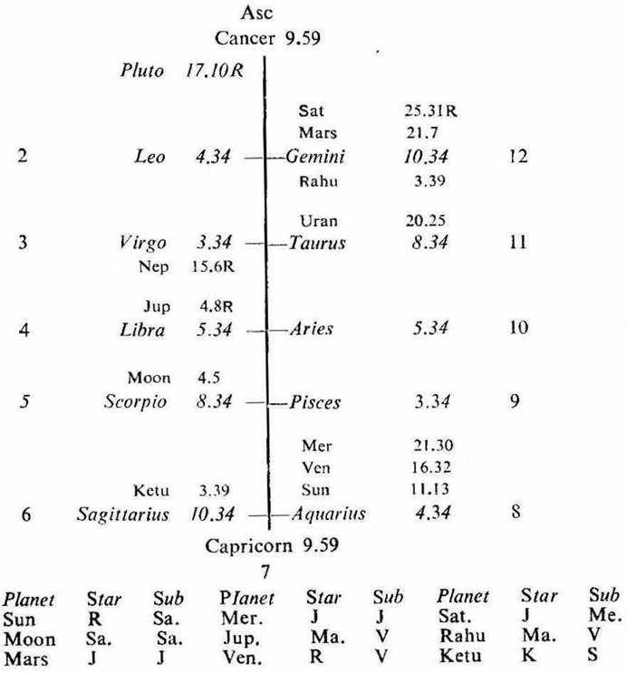

Female. Birth 23-2-1946 Saturday; 4-15 P.M. I.S.T., 23°N2', 72°E 35'; Ayanamsa 23° 0'.

If the cuspal sub lord of the 11th is the significator of 2 (money), 6 (scholarship) or 11 (gain) and connected with the house 4 (studies), the native gets the scholarship for studies during the joint period of the significators of 2, 6 and 11 which are connected with the 4th.
11th Cusp. The sub lord of the 11th cusp is Venus. It owns 4 and 11; its star lord Rahu is in 11; its sub lord is Venus itself. The star lord Rahu and the sub lord Venus both are aspected by Jupiter which is on the 4th cusp and owns 6. The sub lord Venus is in conj. with Sun owning 2. So the cuspal sub lord of 11 is the significator of 11, 4, 6 and connected with 2, 4, 6 and 11. Thus the scholarship for studies is promised to the native and she will get it during the joint period of the significators of 2, 6 and 11.
The native was born during the period of Saturn with balance of 17Y 11M 5D. During her studies she used to get the scholarship in the joint period of Saturn and Jupiter (16-7-1961 to 28-1-1964) and in the joint period of Mercury and Mercury (28-1-1964 to 5-7-1966).
Saturn is in the star Jupiter which is on the 4th cusp, owns 6, aspects Venus owning 4 and 11 and Sun owning 2; it is in the sub Mercury (the significator of 2, 4, 6 and 11). So Saturn is the significator of 2, 4, 6, 11 and connected with 2, 4, 6 and 11.
Jupiter is in the star Mars and in the sub Venus owning 4 and 11. The star lord Mars and the sub lord Venus both are aspected by Jupiter owning 6 and on the 4th cusp. The sub lord Venus is in conj. with Sun owning 2. So Jupiter is connected with 2, 4, 6 and 11.
Mercury is in the Star and Sub Jupiter which is on the 4th cusp, owns 6, aspects Venus owning 4 and 11 and Sun owning 2. So Mercury is the significator of 2, 4, 6, 11 and connected with 2, 4, 6 and 11.
6th cusp (scholarship). It is jointly operated by Jupiter, Ketu and Saturn. Saturn and Jupiter are the significators of and connected with 2, 4, 6 and 11 as discussed above. We have seen that the native used to get the scholarship during the joint period of Saturn and Jupiter. So it may be said that if the cuspal joint rulers of the 6th house be the significators of scholarship, the native gets scholarship during the joint period of these cuspal joint rulers.